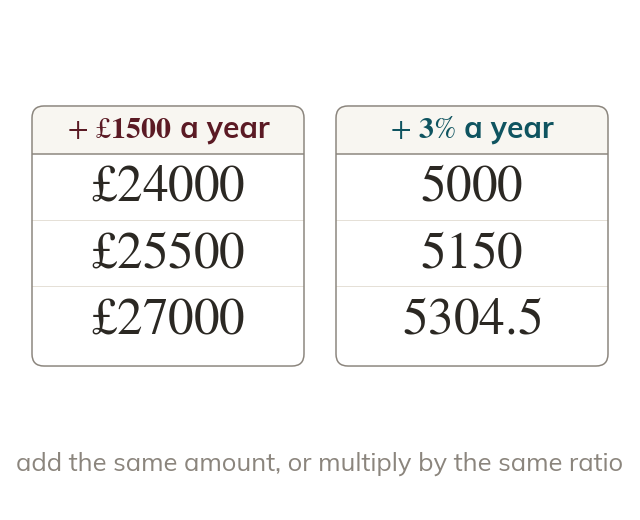
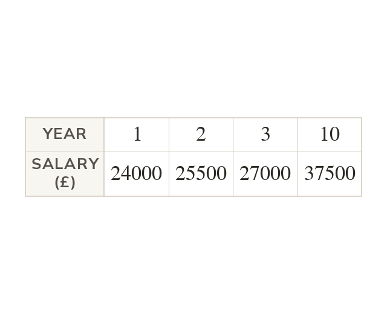
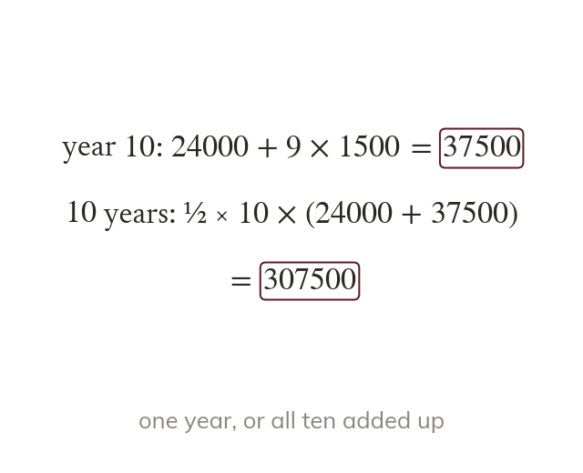
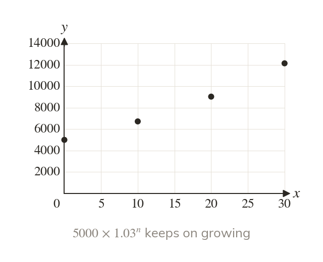
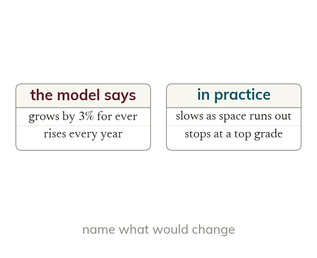
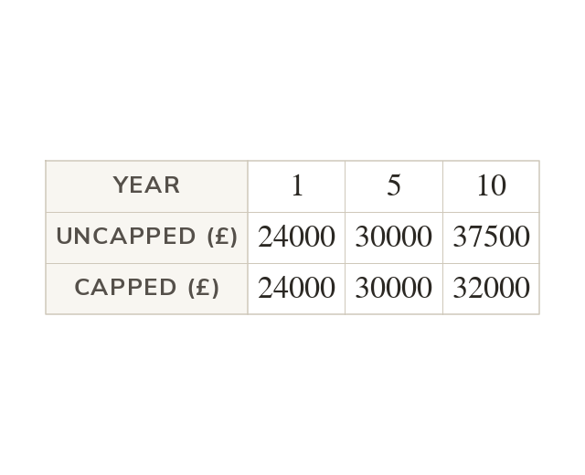

Same amount or same percentage
A salary rising by a year is arithmetic, with
A population growing by a year is geometric, with
Salaries, savings and populations change by the same amount or the same percentage each year, so arithmetic and geometric series answer real questions about them. Saying when a model stops being realistic is part of the answer the exam expects.
Work down the page at your own pace. Write every answer in your book first, then click to check it.
Read each card, then follow the worked examples one step at a time.

A salary rising by a year is arithmetic, with
A population growing by a year is geometric, with

If the salary in year is the salary in year is The first term belongs to year so year is steps on.

The salary in year is a term, but the total earned in years is a sum. Read the question for which one it asks.
Pick an answer. If it's wrong, the feedback tells you which mistake it was.
Write the blanks in your book first, then tap each one to check.
Read each card, then follow the worked examples one step at a time.

A geometric model with grows without limit, but a real population is limited by food and space. An arithmetic salary cannot rise for ever either.

A model gives a number, and the context says whether it makes sense. A town of a million people, or savings that take years, signal a limitation.

A refinement changes the assumption that fails, such as capping a salary or lowering a growth rate. Say what you would change and why.
Pick an answer. If it's wrong, the feedback tells you which mistake it was.
Write the blanks in your book first, then tap each one to check.
For each skill, tap the one that is true for you today. Your Revise pages start with anything you mark Not yet.
Your ratings are saved on this device only.
Log in, then search for a code to practise that skill.